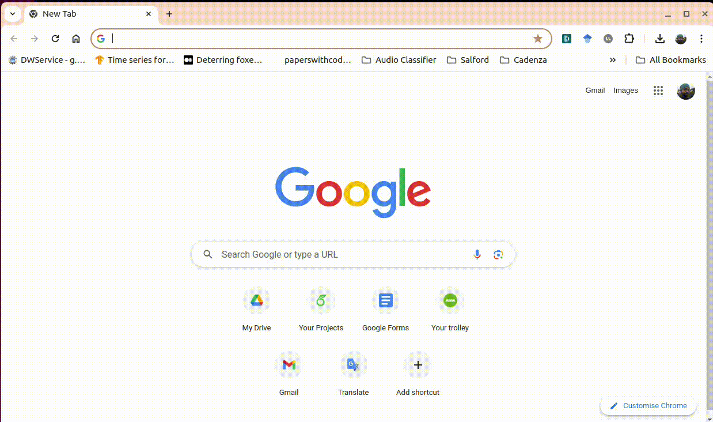

Up to now, we have been focus on sharing code and collaborating with others on GitHub.
But what about sharing machine learning models?
For ML models, we can use the same principles of version control and collaboration that
we have seen before. However, there are some additional considerations when sharing models,
such as the size of the model, the data, and the dependencies. GitHub has some limitations
when it comes to sharing large files, so we may want to use other tools and platforms to share
large machine learning models.
For this kind of content, we can use the same tools that we have seen before, like GitHub,
but we can also use other platforms like Hugging Face,
Weights & Biases, and TensorFlow Hub.
In this section, we will see how to share machine learning models using Hugging Face.
Hugging Face’s platform and libraries, particularly the Transformers library and
HuggingFaceHub, enable efficient and collaborative code sharing.
By providing access to a vast array of models, datasets, and tools,
Hugging Face empowers developers, researchers, and organizations to accelerate
their projects.
We can use Hugging Face to share models, datasets, and training scripts.
Click on the NewModel button on the top right corner
Fill in the details of the model, such as the name, description, and tags

11.1.2. Sharing models using the ModelHubMixin class#
Perhaps, a better way to share models is by using the ModelHubMixin class from the transformers library.
This functionality allows you to upload your model to the Hugging Face Hub directly from your Python code.
huggingFace offers a range of mixins for different frameworks, such as PyTorch, Keras, and Fastai.
Here is an example of how to use the PyTorchModelHubMixin class to upload a model to the Hugging Face Hub
using a PyTorch model:
Install the transformers library
pipinstalltransformers
Create a PyTorch model
Define and train your PyTorch model as usual. Ensure your model class inherits from
torch.nn.Module.
Implement PyTorchModelHubMixin
Make your model class inherit from PyTorchModelHubMixin.
This mixin provides methods to save and load models from the Hugging Face Hub.
fromtransformersimportPyTorchModelHubMixinimporttorch.nnasnnclassMyModel(nn.Module,PyTorchModelHubMixin):def__init__(self):super(MyModel,self).__init__()self.layer=nn.Linear(10,10)defforward(self,x):returnself.layer(x)# Instantiate and train your model as usualmodel=MyModel()# ... train your model
Save the model to the Hugging Face Hub
Use the save_pretrained method to save your model to a local directory.
GitHub and Hugging Face can be used together to share machine learning models.
You can use GitHub to store the code and the training scripts, and Hugging Face to store the models.
This way, you can have a complete pipeline for sharing machine learning models.
Also, in this way, you can use the version control features of GitHub to track changes in the code and the models.
In a similar way, you could share public dataset in Hugging Face Datasets and use it
in your GitHub repository.